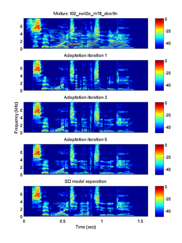

Monaural Speech Separation Using Source-Adapted Models

R. J. Weiss and D. P. W. Ellis, "Monaural Speech Separation Using Source-Adapted Models", in Proceedings of IEEE Workshop on Applications of Signal Processing to Audio and Acoustics (WASPAA), 2007. pp. 114-117
We proposed a system for speech separation based on source-adapted speech signal models. We evaluated the system on the test data from the 2006 Speech Separation Challenge and compared its performance to that of speaker dependent and speaker independent model based systems. Below you can find some performance numbers and audio examples of the separated signals. You can also mouse over the spectrograms to the right to see listen to the corresponding audio.
Performance
We report the word accuracy on the letter and digit spoken by the speaker that says "white" for all three systems. See the paper for a detailed discussion.
Separation using speaker adapted (SA) models (after 5 iterations):
| SNR | Same Talker | Same Gender | Diff Gender | Avg. |
|---|---|---|---|---|
| 6 dB | 38.96% | 50.56% | 62.50% | 50.25% |
| 3 dB | 33.56% | 47.21% | 59.25% | 46.17% |
| 0 dB | 26.80% | 42.46% | 52.50% | 40.02% |
| -3 dB | 23.42% | 33.52% | 49.75% | 35.19% |
| -6 dB | 17.79% | 25.14% | 33.75% | 25.29% |
| -9 dB | 13.06% | 21.51% | 26.00% | 19.88% |
Separation using speaker adapted (SA) models (after 15 iterations):
| SNR | Same Talker | Same Gender | Diff Gender | Avg. |
|---|---|---|---|---|
| 6 dB | 41.89% | 63.41% | 71.00% | 57.99% |
| 3 dB | 32.43% | 58.38% | 71.25% | 53.08% |
| 0 dB | 29.05% | 53.35% | 64.25% | 48.00% |
| 3 dB | 22.07% | 43.02% | 56.50% | 39.77% |
| -6 dB | 19.59% | 39.39% | 40.25% | 32.36% |
| -9 dB | 14.64% | 24.30% | 30.25% | 22.71% |
Separation using speaker dependent (SD) models:
| SNR | Same Talker | Same Gender | Diff Gender | Avg. |
|---|---|---|---|---|
| 6 dB | 38.29% | 78.49% | 74.25% | 62.23% |
| 3 dB | 37.84% | 74.58% | 77.75% | 62.06% |
| 0 dB | 28.60% | 72.07% | 76.00% | 57.32% |
| -3 dB | 22.75% | 62.29% | 66.00% | 48.92% |
| -6 dB | 15.32% | 46.93% | 51.25% | 36.69% |
| -9 dB | 9.01% | 27.93% | 27.50% | 20.80% |
Separation using speaker independent (SI) models:
| SNR | Same Talker | Same Gender | Diff Gender | Avg. |
|---|---|---|---|---|
| 6dB | 31.08% | 34.08% | 35.50% | 33.44% |
| 3dB | 26.80% | 30.45% | 31.50% | 29.45% |
| 0dB | 24.55% | 26.26% | 31.00% | 27.20% |
| -3dB | 18.02% | 22.35% | 21.75% | 20.55% |
| -6dB | 14.19% | 18.44% | 18.75% | 16.97% |
| -9dB | 9.46% | 9.50% | 11.75% | 10.23% |
Audio examples
| . | 6dB | 3dB | 0dB | m3dB | m6dB | m9dB |
|---|---|---|---|---|---|---|
| Mixture | mixture | mixture | mixture | mixture | mixture | mixture |
| SA | target masker | target masker | target masker | target masker | target masker | target masker |
| SD | target masker | target masker | target masker | target masker | target masker | target masker |
| SI | target masker | target masker | target masker | target masker | target masker | target masker |